资源
- GAMES104-现代游戏引擎：从入门到实践_哔哩哔哩_bilibili
- GAMES104 - 现代游戏引擎入门必修课 (boomingtech.com)
- Piccolo 社区 - 游戏引擎爱好者的新家园 (piccoloengine.com)
- BoomingTech/Piccolo: Piccolo (formerly Pilot) – mini game engine for games104 (github.com)
- GAMES104：现代游戏引擎，从理论到实践 - 知乎 (zhihu.com)
课程
第十节：游戏引擎中物理系统的基础理论和算法
Physics System: Basic Concepts
Physics in Games (1/4) - Physical Intuition
游戏中的物理（1/4）- 物理直觉
Physics in Games (2/4) - Dynamic Environment
游戏中的物理（2/4）- 动态环境
Physics in Games (3/4) - Realistic Interaction
游戏中的物理（3/4）- 真实交互
Physics in Games (4/4) - Artistic
游戏中的物理（4/4）- 艺术
Outline of Physics System
Basic Concepts
-
Physics Actors and Shapes
物理角色和形状
-
Forces
力
-
Movements
运动
-
Rigid Body Dynamics
刚体动力学
-
Collision Detection
碰撞动力学
-
Collision Resolution
碰撞解决
-
Scene Query
场景查询
-
Efficiency, Accuracy, and Determinism
效率、准确性和确定性
Applications
-
Character Controller
角色控制器
-
Ragdoll
布娃娃
-
Destruction
破坏
-
Cloth
布料
-
Vehicle
车辆
-
Advanced Physics: PBD
高级物理：PBD
PBD 基本上是一种进行物理模拟的方法。与质量弹簧系统、FEM、SPH 和 FLIP 等其他传统方法相比，PBD 在物理上并不准确，因为没有根据物理定律计算系统的内力。但 PBD 的一大优势是它速度非常快，并且产生视觉上合理的模拟结果，这使得 PBD 成为游戏中模拟的完美解决方案。
Physics Actors and Shapes
Visual World vs. Physics World
{kind=link}
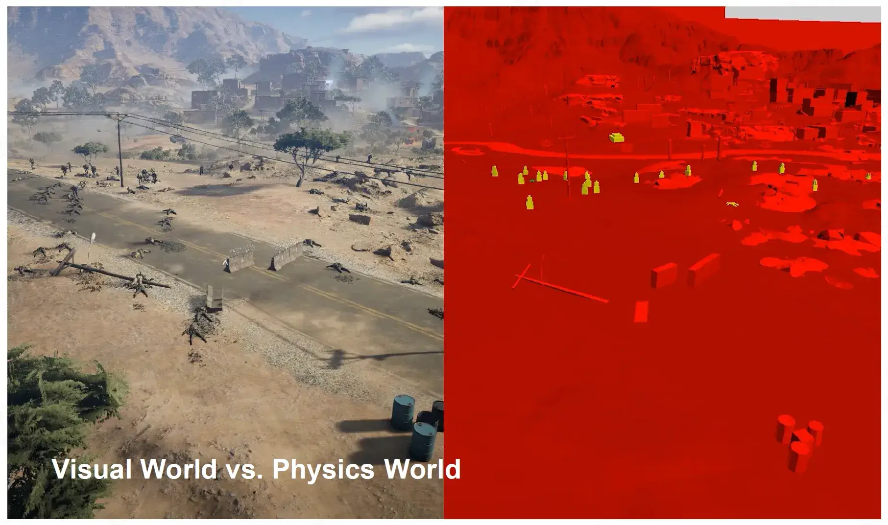
物理世界使用较简单的模型。
Actor - Static
静态 actor，不受物理影响，一直不动。
Actor - Dynamic
动态 actor，物体的 transform 受物理影响。
Trigger
-
Like static actor, not moving
像静态 actor 一样，不动
-
But not blocking
但不会阻挡
-
Notifies when actors enter or exit
在 actor 进入或退出时通知
Physics Law is Unbreakable, But in Game...
物理定律是牢不可破的，但在游戏中是可以的。
Actor-Kinematic (No Physics Law)
不服从物理规律，直接设定 Actor 的 transform，而不是通过施加力改变它。
Kinematic Actors are Troublemakers
这种方法容易卡 bug。
Actor-Summary
Static Actor 静态 Actor
-
Not moving
不移动
Dynamic Actor 动态 Actor
-
Can be affected by forces/torques/impulses
可受力/扭矩/脉冲影响
Trigger 触发器
Kinematic Actor
-
lgnoring physics rules
忽略物理规则
-
Controlled by gameplay logic directly
直接由游戏逻辑控制
Actor Shapes
{kind=link}
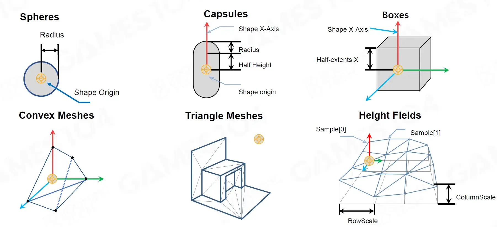
为了简便计算，Actor 一般有如下几种形态：
-
Spheres
球体
-
Capsules
胶囊
-
Boxes
盒子
-
Convex Meshes
凸包网络
-
Triangle Meshes
三角形网络
-
Height Fields
高度场
Shapes - Spheres
{kind=link}
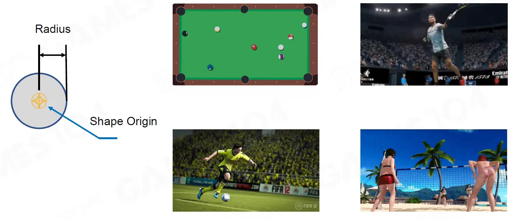
由球心和半径组成。常用于描述现实生活中的球体。
Shapes - Capsules
{kind=link}
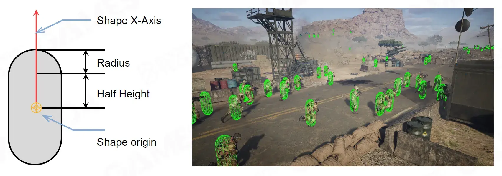
胶囊体，通常用于表示人物。
Shapes - Boxes
{kind=link}
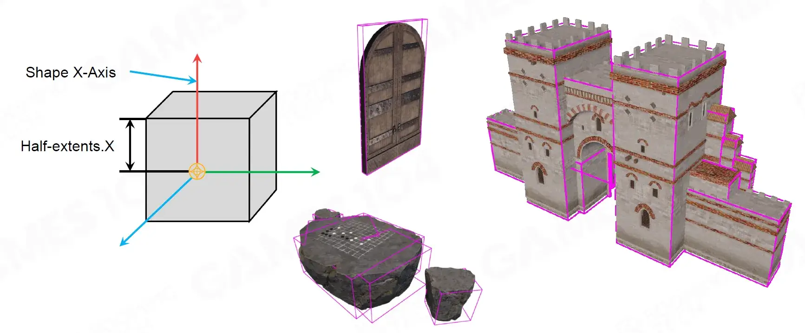
立方体，通常用于表示建筑物以减少计算量。
Shapes - Convex Meshes
{kind=link}
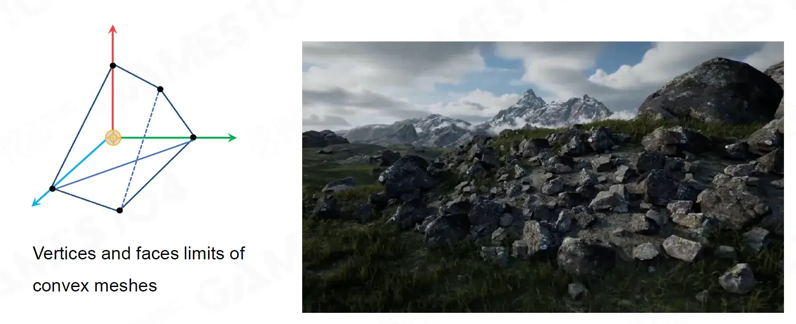
凸包，通常表示不规则物体。
Shapes - Triangle Meshes
{kind=link}
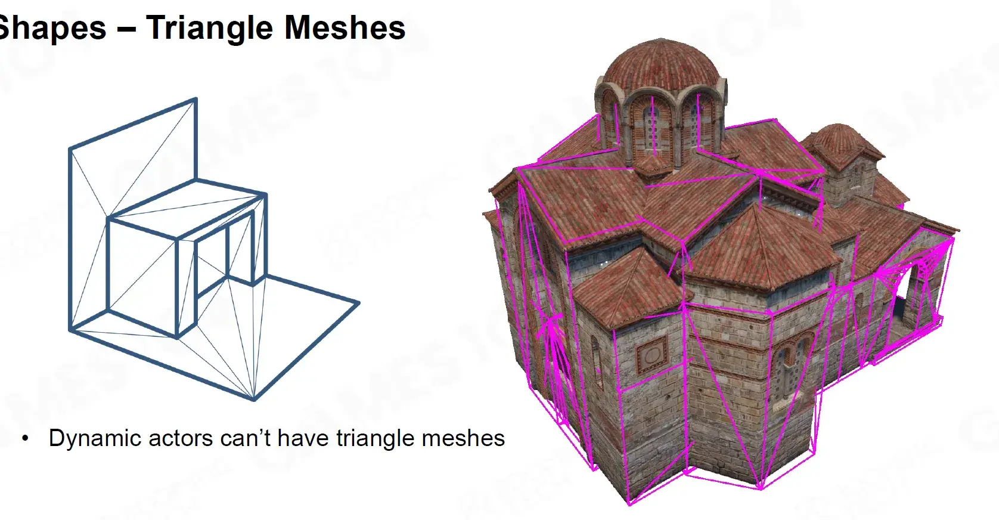
用三角形面表示的物体不可用于动态 Actor。
Shapes - Height Fields
{kind=link}
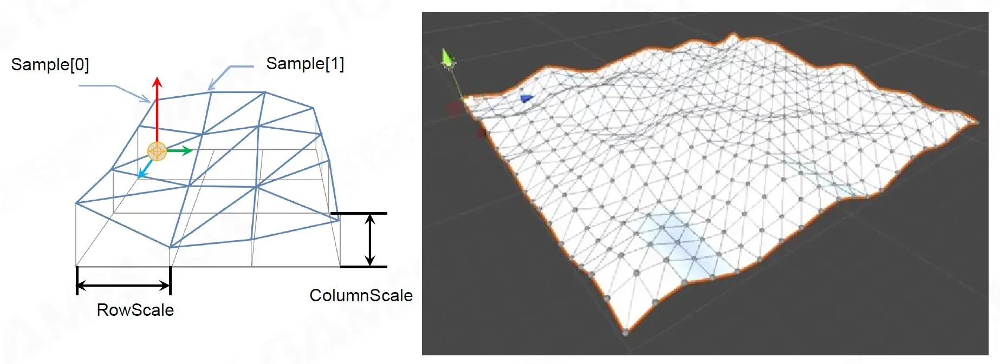
高度场，表示地面。
Wrap Objects with Physics Shapes
用物理形状包裹物体
{kind=link}
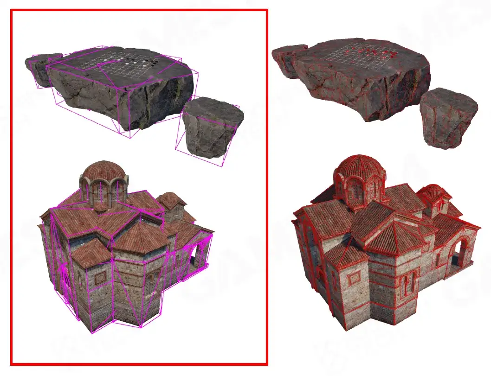
给物体选用 Collider 的要点：
-
Approximated Wrapping
近似包裹
-
Don't need to be perfect
无需完美
-
-
Simplicity
简单
-
Prefer simple shapes (avoid triangle mesh if possible)
首选简单形状（尽可能避免三角形网格）
-
Least shapes
最少形状
-
Shape Properties - Mass and Density
形状属性：质量和密度
物体的 Collider 对物理的影响巨大。
冈布茨（匈牙利语：Gömböc，发音：[ˈɡømbøt͡s]）是第一个被制造出来的为人所知的具有单单稳态性质的三维凸均匀体，在平面上，单单稳态物体只具有一个稳定和一个不稳定的力学平衡点。1995 年俄罗斯数学家弗拉基米尔·阿诺尔德猜想存在这类三维凸均匀体。2006 年匈牙利科学家多莫科什·加博尔（英语：Gábor Domokos）和瓦尔科尼·彼得证明了这类物体存在并构造出来。单单稳态的形态多种多样，它们中大多数都接近圆形并且有着非常严苛的形状公差要求（大约千分之一）。
Shape Properties - Center of Mass
{kind=link}
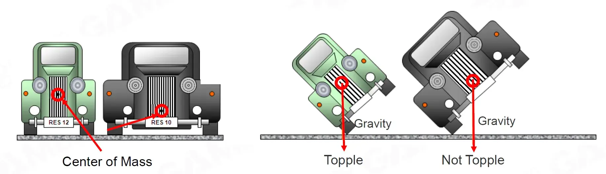
Shape Properties - Friction & Restitution
形状属性 - 摩擦和弹性
这可使用物理材质贴图来定义。
Forces
Force
{kind=link}
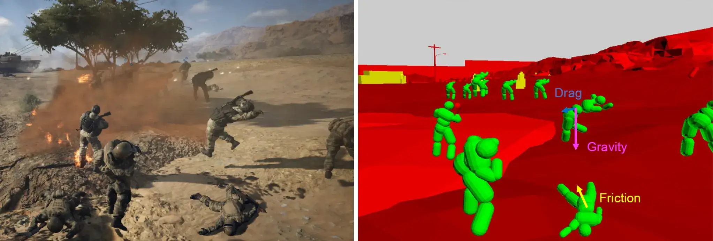
-
We can apply forces to give dynamic objects accelerations, therefore affecting their movements
我们可以施加力来使动态物体加速，从而影响它们的运动
-
Examples
-
Gravity
重力
-
Drag
阻力
-
Friction
摩擦力
-
…
-
Impulse
{kind=link}
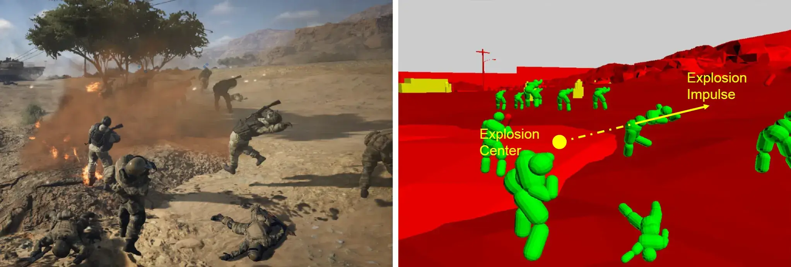
-
We can change velocity ofactors immediately by applying impulses
我们可以通过施加脉冲立即改变行为者的速度
-
E.g.simulating an explosion
例如模拟爆炸
Movements
Newton's 1st Law of Motion
{kind=link}
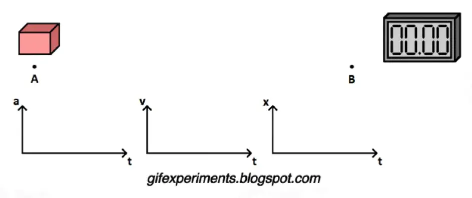
If there is no external force
如果物体不受力的作用，那么它将静止或者一直做匀速直线运动。
Newton's 2st Law of Motion
{kind=link}
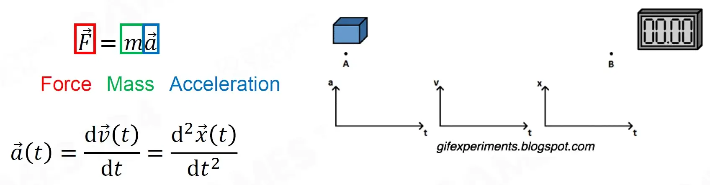
Movement under Constant Force
在恒定力作用下的运动：
Movement under Varing Force
{kind=link}
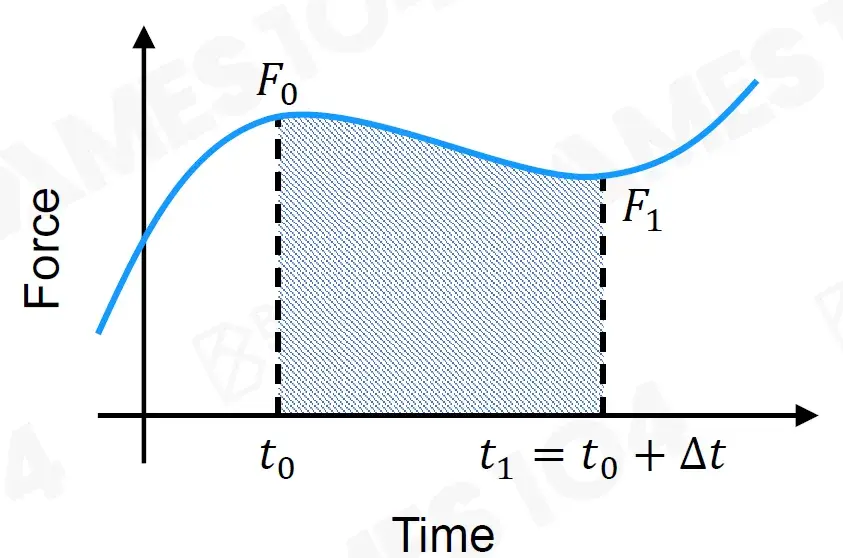
在变力作用下的运动：
Newton's 2st Law of Motion
If there is varying external force
\vec{F}&=m\vec{a} \\ \vec{a}&=\vec F/m \\ \vec{\nu}(t+\Delta t)& =\vec{v}(t)+\int_t^{t+\Delta t}\vec{a}(t')\mathrm{d}t' \\ \vec{x}(t+\Delta t)& =\vec{x}(t)+\int_t\vec{v}(t')\mathrm{d}t' \end{aligned}$$ #### Example of Simple Movement  简单运动示例 - Position 位置 - Orientation 方向 - Linear Velocity 线速度 - Angular Velocity 角速度 $$\mathbf{X}(t)=\begin{pmatrix}\vec{x}(t)\\R(t)\\\vec{v}(t)\\\vec{\omega}(t)\end{pmatrix}$$ #### Motion in Reality 在现实生活中的运动：  At time $t$ - Position: $\vec x(t)$ - Linear Velocity: $\vec t = \frac{d\vec x(t)}{dt}$ #### Simulation in Game 现实生活中时间是连续的，游戏中是离散的。 Simulation Step Given $\vec x(t), \vec v(t)$ Compute $\vec x(t+\Delta t),\vec v(t+\Delta t)$ $\Delta t$ is the time step size #### Time integration 时间整合  $$\vec{x}(t_1)=\vec{x}(t_0)+\int_{t_0}^{t_1}\vec{v}(t)\mathrm{d}t$$ #### Euler's Method 使用欧拉方法求解上述方程。 #### Explicit (Forward) Euler's Method Simplest estimation 最简单的估计 Assume the force is constant during the time step 假设力在时间步长内是恒定的。  用前一时刻的 $\vec v(t_0)\Delta t$ 代替 $\int_t\vec{v}(t')\mathrm{d}t'$。  这么做容易导致能量不守恒，越来越多。 The result of explicit Euler's method explodes! 显式欧拉方法结果爆炸！ Pros: - Easy to calculate, efficient 计算方便，效率高 Cons: - Poor stability 稳定性差 - Energy growing as time progresses 能量随时间推移而增长 #### Implicit (Backward) Euler's Method  用后一时刻的 $\vec v(t_1)\Delta t$ 代替 $\int_t\vec{v}(t')\mathrm{d}t'$。  The result of implicit Euler's method spirals! 隐式欧拉法的结果呈螺旋状！ Pros: - Unconditionally stable 无条件稳定（最后会收敛） Cons: - Expensive to solve 求解成本高 - Challenging to implement when non-linearity presents 存在非线性时实施难度大 - Energy attenuates as time progresses 能量随时间衰减 #### Semi-implicit Euler's Method 将上述两个方法结合。  The result approximates the circle well if the timestep is small enough 如果时间步长足够小，结果就能很好地近似圆  - Conditionally stable 条件稳定 - Easy to calculate, efficient 易于计算，高效 - Preserves energy as time progresses 随着时间的推移保存能量 ### Rigid Body Dynamics 刚体动力学 #### Particle Dynamics 粒子动力学（将物体视为质点） - Position: $\vec x$ - Linear Velocity: $\vec v=\frac{d\vec x}{dt}$ - Acceleration: $\vec a=\frac{d\vec v}{dt}=\frac{d^2\vec x}{dt^2}$ - Mass: $M$ - Momentum: $\vec p = M\vec v$ - Force: $\vec F=\frac{d\vec p}{dt}=M\vec a$ #### Rigid body Dynamics 刚体动力学 Besides linear values, rigid body dynamics have angular values 除了线性值外，刚体动力学还有角度值 - Orientation: $\mathbf R$ - Angular velocity: $\vec \omega$ - Angular acceleration: $\vec \alpha$ - Inertia tensor 惯性张量: $\mathbf I$ - Angular momentum: $\vec L$ - Torque 力矩: $\vec{\tau}$ #### Orientation - R  物体的旋转，可用旋转矩阵或是四元数来表示。 #### Angular Velocity - $\vec \omega$  Direction of $\vec \omega$ is the direction of the rotation axis $\vec \omega$ 的方向是旋转轴的方向 $\theta$: rotated angle in radians $\theta$：以弧度为单位的旋转角度 $$\begin{aligned}&\|\vec{\omega}\|=\frac{d\theta}{dt}\\&\vec{\omega}=\frac{\vec{v}\times\vec{r}}{\|\vec{r}\|^2}\end{aligned}$$ #### Angular Accelation - $\vec \alpha$  $$\vec{\alpha}=\frac{\mathrm{d}\vec{\omega}}{\mathrm{d}t}=\frac{\vec{a}\times\vec{r}}{\|\vec{r}\|^2}$$ #### Rotational Inertia - $\mathbf I$ 转动惯量  Rotational inertia describes the distribution of mass for a rigid body 转动惯量描述刚体的质量分布 $$\mathbf{I}=\mathbf{R}\cdot\mathbf{I}_0\cdot\mathbf{R}^\mathrm{T}$$  Total Mass: $M=m_1+m_2$ Center of Mass: $CoM=\frac{m_1}{M}(x_1,y_1,z_1)+\frac{m_2}{M}(x_2,y_2,z_2)$ Initial lnertia Tensor 初始惯性张量: $$\begin{gathered}I_0=\begin{bmatrix}m_1(y_1^2+z_1^2)+m_2(y_2^2+z_2^2)&-m_1x_1y_1-m_2x_2y_2&-m_1x_1z_1-m_2x_2z_2\\-m_1y_1x_1-m_2y_2x_2&m_1(x_1^2+z_1^2)+m_2(x_2^2+z_2^2)&-m_1y_1z_1-m_2y_2z_2\\-m_1z_1x_1-m_2z_2x_2&-m_1z_1y_1-m_2z_2y_2&m_1(x_1^2+y_1^2)+m_2(x_2^2+y_2^2)\end{bmatrix}\end{gathered}$$ #### Angular Momentum - $\vec L$ $$\vec L=\mathbf I\vec \omega$$  #### Torque - $\vec{\tau}$  We denote external force $\vec F$ exerted on position $\vec r$ on the rigid body, therefore 我们将施加于刚体上位置 $\vec r$ 的外力 $\vec F$ 表示为，因此 $$\vec{\tau}=\vec{r}\times\vec{F}=\frac{d\vec{L}}{dt}$$ #### Summary - Angular Values vs. Linear Values - Orientation: $\mathbf R$ - Angular velocity: $\vec{\omega}=\frac{\vec{v}\times\vec{r}}{\|\vec{r}\|^2}$ - Angular acceleration: $\vec{\alpha}=\frac{\mathrm{d}\vec{\omega}}{\mathrm{d}t}=\frac{\vec{a}\times\vec{r}}{\|\vec{r}\|^2}$ - Inertia tensor 惯性张量: $\mathbf{I= R\cdot I_o\cdot R^T}$ - Angular momentum: $\vec L=\mathbf I\vec\omega$ - Torque: $\vec\tau=\frac{d\vec L}{dt}$ - Position: $\vec x$ - Linear velocity: $\vec v=\frac{d\vec x}{dt}$ - Linear accelation: $\vec a=\frac{d\vec v}{dt}=\frac{d^2\vec x}{dt^2}$ - Mass: $M=\sum m_i$ - Linear momentum: $\vec p=M\vec v$ - Force: $\vec F=\frac{d\vec p}{dt}=m\vec a$ #### Application-Billiard Dynamics Even though we have known the elements of rigid body dynamics, the physics in a light billiard game is still complicated.. 即使我们已经了解了刚体动力学的要素，轻型台球游戏中的物理仍然很复杂。  击打桌球时要故意打偏一点让球旋转。 - Friction lmpulse 摩擦脉冲: $\vec{p}_F=\int\vec{F}dt=m\vec{v}_x$ - Pressure lmpulse 压力脉冲: $\vec{p}_N=\int\vec{N}dt=m\vec{v}_y$ - Ball Angular Momentum 球角动量: $\vec{L}_b=\boldsymbol{I}_b\vec{\omega}=\vec{p}_F\times\vec{r}_F$ - Ball Linear Velocity 球线速度: $\vec{v}=\vec{v}_x+\vec{v}_y$ ### Collision Detection 碰撞检测 - Broad phase 广泛阶段 - Find intersected rigid body AABBS 查找相交刚体 AABBS - Potential overlapped rigid body pairs 潜在重叠刚体对 - Narrow phase 严格阶段 - Detect overlapping precisely 精确检测重叠 - Generate contact information 生成接触信息 #### Broad Phase and Narrow Phase  #### Broad Phase - Objective 目标 - Find intersected rigid body AABBS 查找相交刚体 AABBS - Potential overlapped rigid body pairs 潜在重叠刚体对 - Two approaches 两种方法 - Space partitioning 空间分割 - i.e. Boundary Volume Hierarchy (BVH) Tree 边界体积层次（BVH）树 - Sort and Sweep 排序和扫描 #### Broad Phase - BVH Tree  鼠标所指的那个绿色小框框的移动只会改变少部分 BVH 树的结构。  #### Broad Phase - Sort and Sweep (1/2)  Sorting Stage (lnitialize) 排序阶段（初始化） For each axis 针对每个轴 - Sort AABB bounds along each axis when initializing the scene 初始化场景时，沿每个轴对 AABB 边界进行排序 - Check AABB bounds of actors along each axis 检查每个轴上 actor 的 AABB 边界 - $A_{max} \ge B_{min}$ indicates potential overlap of $A$ and $B$ $A_{max} \ge B_{min}$ 表示 $A$ 和 $B$ 可能重叠 --- Sweeping Stage (Update) 扫描阶段（更新） - Only check swapping of bounds 仅检查边界交换 - temporal coherence 时间连贯性 - local steps from frame to frame 帧与帧之间的局部步骤 - Swapping of min and max indicates add/delete potential overlap pair from overlaps set 最小值和最大值的交换表示从重叠集添加/删除潜在重叠对 - Swapping of min and min or max and max does not affect overlaps set 最小值和最小值或最大值和最大值的交换不影响重叠集 #### Narrow Phase - Objectives  - Detect overlapping precisely 精确检测重叠 - Generate contact information 生成接触信息 - Contact manifold 接触流形 - approximated with a set of contact points 用一组接触点近似 - Contact normal 接触法线 - Penetration depth 穿透深度 #### Narrow Phase - Approaches - Three approaches 三种方法 - Basic Shape Intersection Test 基本形状相交测试 - Minkowski Difference-based Methods 基于明可夫斯基差异的方法 - Separating Axis Theorem 分离轴定理 #### Basic Shape lntersection Test 基础模型计算物理比较快是因为有专门的公式。  Sphere-Sphere Test 球-球测试 - overlap 重叠: $|\vec c_2-\vec c_1|-r_1-r_2\le 0$ - contact information 接触信息: - contact normal 接触法线: $\vec c_2-\vec c_1/|\vec c_2 -\vec c_1|$ - penetration depth 穿透深度: $\vec c_2-\vec c_1|-r_1-r_2$  Sphere-Capsule Test 球体胶囊测试 $\vec L$ is the closest point on the inner capsule segment $\vec L$ 是内胶囊段上的最近点 - overlap 重叠: $|\vec C-\vec L|-r_S-r_C\le 0$ - contact information 接触信息: - contact normal 接触法线: $\vec L-\vec C/|\vec L-\vec C|$ - penetration depth 穿透深度: $|\vec C-\vec L|-r_S-r_C$  Capsule-Capsule Test 胶囊-胶囊 测试 $\vec L_1$, and $\vec L_2$, are the closest points on the two segments $\vec L_1$ 和 $\vec L_2$ 是两个段上最接近的点 overlap 重叠: $|\vec L_2-\vec L_1|-r_1-r_2\le 0$ contact normal 接触法线: $\vec L_2-\vec L_1/|\vec L_2-\vec L_1|$ penetration depth 穿透深度: $|\vec L_2-\vec L_1|-r_1-r_2$ #### Minkowski Difference-based Methods-concepts 基于闵可夫斯基差异的方法概念 Minkowski Sum 闵可夫斯基 - Points from $A$ + Points from $B$ = Points in Minkowski Sum of $A$ and $B$ 来自 $A$ 的点 + 来自 $B$ 的点 = $A$ 与 $B$ 的闵可夫斯基和中的点 $$A\oplus B=\{\vec{a}+\vec{b}{:}\vec{a}\in A,\vec{b}\in B\}$$ $$\begin{aligned}&A{:}\{\vec{a}_1,\vec{a}_2\}\\&B{:}\{\vec{b}_1,\vec{b}_2,\vec{b}_3\}\\&A\oplus B=\{\vec{a}_1+\vec{b}_1,\vec{a}_1+\vec{b}_2,\vec{a}_1+\vec{b}_3,\vec{a}_2+\vec{b}_1,\vec{a}_2+\vec{b}_2,\vec{a}_2+\vec{b}_3\}\end{aligned}$$ #### Minkowski Sum - Points from A+ Points from B = Points in Minkowski Sum of A and B 来自 A 的点 + 来自 B 的点 = A 与 B 的 Minkowski 和中的点 $$A\oplus B=\{\vec{a}+\vec{b}:\vec{a}\in A,\vec{b}\in B\}$$  如果 $A$ 是一个点，则 $A\oplus B$ 相当于 $B$ 沿 $\overrightarrow{O'A}$ 移动。  如果 $A$ 是一条线，则 $A\oplus B$ 相当于 $B$ 沿 $A$ 起点移动所形成的三角形再按 $A$ 线条方向再移动……（真难表述）  如果 $A$ 是一个三角形，则 $A\oplus B$ 相当于 $B$ 沿 $A$ 起点移动所形成的三角形再按 $A$ 三角形的逐个线条方向再移动……（真难表述） #### Minkowski Sum-Convex Polygons $$A\oplus B=\{\vec{a}+\vec{b}:\vec{a}\in A,\vec{b}\in B\}$$  - Theorem 定理 - For convex polygons $A$ and $B$, 对于凸多边形 $A$ 和 $B$， $A\oplus B$ is also a convex polygon $A\oplus B$ 也是凸多边形 - The vertices of $A\oplus B$ are the sum ofthe vertices of $A$ and $B$ $A\oplus B$ 的顶点是 $A$ 和 $B$ 的顶点之和 #### Minkowski Difference 闵可夫斯基差  $-B$ 看上去就是 $B$ 的中心对称图形。 - Points from $A$ - Points from $B$ = Points in Minkowski Difference of A and $B$ 来自 $A$ 的点 - 来自 $B$ 的点 = $A$ 和 $B$ 的闵可夫斯基差中的点 $A\ominus B=\{\vec a-\vec b: \vec a\in A,\vec b\in B\}$ - Minkowski sum of $A$ and mirrored $B$ $A$ 和镜像 $B$ 的闵可夫斯基和 $A\ominus B=A\oplus (-B)$ #### Origin and Minkowski Difference  $$A\ominus B=\{\vec a-\vec b:\vec a\in A,\vec b \in B\}$$ - Same point in $A$ and $B$ $A$ 和 $B$ 中的相同点 - The origin is in the Minkowski Difference! 如果重复，则 $A\ominus B$ 必过原点！ #### GJK Algorithm - Walkthrough (Separation Case) GJK 算法 - 演练（分离案例）  - Determine iteration direction 确定迭代方向 - Find supporting points $\vec p_A$ and $\vec p_B$ 找到支撑点 $\vec p_A$ 和 $\vec p_B$ - Add new point $\vec p_A - \vec p_B$ to iteration simplex on Minkowski difference 在 Minkowski 差分上将新点 $\vec p_A - \vec p_B$ 添加到迭代单纯形中   - Determine iteration direction 确定迭代方向 - Check if origin is in the simplex 检查原点是否在单纯形中 - Find nearest point to origin in the simplex 在单纯形中查找距离原点最近的点 - If nearest distance reduced, continue iterating 如果最近距离减小，则继续迭代 - Find supporting points $\vec p_A$ and $\vec p_B$ 查找支持点 $\vec p_A$ 和 $\vec p_B$ - Add new point $\vec p_A-\vec p_B$ to iteration simplex on Minkowski difference 在 Minkowski 差分上将新点 $\vec p_A-\vec p_B$ 添加到迭代单纯形中   - Determine iteration direction 确定迭代方向 - Check if origin is in the simplex 检查原点是否在单纯形中 - Find nearest point to origin in the simplex 在单纯形中查找距离原点最近的点 - Find nearest distance reduced, continue iterating 查找距离最近的点，继续迭代 - Remove point having no contribution to the new nearest point from simplex 从单纯形中删除对新最近点没有贡献的点 - Find supporting points $\vec p_A$ and $\vec p_B$ 查找支持点 $\vec p_A$ 和 $\vec p_B$ - Add new point $\vec p_A-\vec p_B$ to iteration simplex on Minkowski difference 在 Minkowski 差分上将新点 $\vec p_A-\vec p_B$ 添加到迭代单纯形中 #### GJK Algorithm-Walkthrough (Overlapped Case)  - Determine iteration direction 确定迭代方向 - Find supporting points $\vec p_A$ and $\vec p_B$ 找到支撑点 $\vec p_A$ 和 $\vec p_B$ - Add new point $\vec p_A - \vec p_B$ to iteration simplex on Minkowski difference 在 Minkowski 差分上将新点 $\vec p_A - \vec p_B$ 添加到迭代单纯形中   - Determine iteration direction 确定迭代方向 - Check if origin is in the simplex 检查原点是否在单纯形中 - Find nearest point to origin in the simplex 在单纯形中查找距离原点最近的点 - If nearest distance reduced, continue iterating 如果最近距离减小，则继续迭代 - Find supporting points $\vec p_A$ and $\vec p_B$ 查找支持点 $\vec p_A$ 和 $\vec p_B$ - Add new point $\vec p_A-\vec p_B$ to iteration simplex on Minkowski difference 在 Minkowski 差分上将新点 $\vec p_A-\vec p_B$ 添加到迭代单纯形中 #### Separating Axis Theorem (SAT)-Convexity 分离轴定理 (SAT)-凸性  Edges can separate two convex polygons due to convexity 由于凸性，边可以分离两个凸多边形 #### Separating Axis Theorem(SAT)-Necessity for overlapping 分离轴定理 (SAT)-重叠的必要性  - An edges failed to separate the polygons is not sufficient for overlapping 无法分离多边形的边不足以重叠 - All edges must be checked until a separating axis is found 必须检查所有边，直到找到分离轴 #### Separating Axis Theorem(SAT)-Separating Criteria 分离轴定理 (SAT)-分离标准  #### Separating Axis Theorem(SAT) - 2D Case 分离轴定理 (SAT) - 2D 案例 - Check edges from $A$ and vertices from $B$ 检查来自 $A$ 的边和来自 $B$ 的顶点 - Check vertices from $A$ and edges from $B$ 检查来自 $A$ 的顶点和来自 $B$ 的边 All edges from B failed   #### Separating Axis Theorem(SAT)-Optimization for 2D Case 分离轴定理 (SAT)-二维情况的优化  - Check edges from A and vertices from B 检查来自 A 的边和来自 B 的顶点 - Check vertices from A and edges from B 检查来自 A 的顶点和来自 B 的边 Optimization 优化 - Cache the last separating axis 缓存最后一个分离轴 #### Separating Axis Theorem (SAT)-3D Case 分离轴定理 (SAT)-3D 案例  - Check faces from A and vertices from B 检查来自 A 的面和来自 B 的顶点 - Separating axis: face normals of A 分离轴：A 的面法线 - Check vertices from A and faces from B 检查来自 A 的顶点和来自 B 的面 - Separating axis: face normals of B 分离轴：B 的面法线 - Check edges from A and edges from B 检查来自 A 的边和来自 B 的边 - Separating axis: cross product of two edges 分离轴：两个边的交叉积 ### Collision Resolution 碰撞解决 #### Collision Resolution  - We have determined collisions precisely 我们已经精确地确定了碰撞 - We have obtained collision information 我们已经获得了碰撞信息 - Next, let's deal with collision resolution 接下来，让我们处理碰撞解决 #### Approaches 方法（当物体发生碰撞时，执行操作） - Three approaches 三种方法 - Applying Penalty Force 施加惩罚力 - Solving Velocity Constraints 解决速度约束 - Solving Position Constraints (will be covered in the next lecture) 解决位置约束（将在下一讲中介绍） #### Applying Penalty Force 应用惩罚力  - Rarely used in games 游戏中很少使用 - Large forces and small time steps are needed to make colliding actors look rigid 需要较大的力和较小的时间步长来使碰撞的演员看起来僵硬 #### Solving Constraints 解决约束 - Modelling constraints based on Lagrangian mechanics 基于拉格朗日力学的建模约束 - Collision constraints 碰撞约束 - Non-penetration 非穿透 - Restitution 恢复 - Friction 摩擦 - lterative solver 迭代求解器  #### Solving Velocity constraints 解决速度约束  Approaches: 方法： - Sequential impulses 顺序脉冲 - Semi-implicit integration 半隐式积分 - Non-linear Gauss-Seidel Method 非线性高斯-赛德尔方法 Characteristics: 特点 - Fast, stable for most cases 大多数情况下快速、稳定 - Commonly used in most physics engines 大多数物理引擎中常用 ### Scene Query 场景查询 #### Raycast 射线投射  - Intersect a user-defined ray with the whole scene 将用户定义的射线与整个场景相交 - Point, direction, distance and query mode can be defined 可以定义点、方向、距离和查询模式  - Mutiple hits looks for all blocking hits, picks the one with the minimum distance多次命中寻找所有阻挡命中，选择距离最小的命中 - Closest hit looks for all blocking hits 最近命中寻找所有阻挡命中 - Any hit any hit encountered will do 遇到的任何命中都可以 #### Sweep 扫描  - Geometrically similar to raycast 几何形状类似于射线投射 - Shape and pose can be defined 可以定义形状和姿势 - Box, sphere, capsule and convex 盒子、球体、胶囊和凸面 #### Overlap  - Search a region enclosed by a specified shape for any overlapping objects in the scene 在特定形状所包围的区域中搜索场景中任何重叠的物体 - Box, sphere, capsule and convex 盒子、球体、胶囊和凸面 #### Collision Group 碰撞组 - Actor has a collision group property Actor 具有碰撞组属性 Player: Pawn 玩家：Pawn Obstacle: Static 障碍物：静态 Movable box: Dynamic 可移动框：动态 Trigger box : Trigger 触发框：触发器 ... - Scene query can filter collision groups 场景查询可以过滤碰撞组 Player moving query collision group: 玩家移动查询碰撞组： (Pawn, Static, Dynamic) （Pawn、静态、动态） Trigger query collision group. 触发查询碰撞组。 (Pawn) ### Efficiency, Accuracy, and Determinism 效率、准确性和确定性 #### Simulation Optimization - Island 仿真优化  将不常用的物体组合在一起，减少运算量。 #### Simulation Optimization - sleeping  - Simulating and solving all rigid bodies uses lots of resources 模拟和解决所有刚体需要大量资源 - Introducing sleeping 引入休眠 - A rigid body does not move for a period of time 刚体在一段时间内不会移动 - Until some external force acts on it 直到有外力作用于它 #### Continuous Collision Detection  碰撞盒太小，速度太快，导致帧与帧之前没有发生碰撞，直接穿过碰撞盒。就要引入 Continuous Collision Detection - Thin obstacle vs. fast moving actors 细小障碍物与快速移动的行动者 - Tunneling 隧穿效应 --- - Solution to tunnelling 隧穿解决方案  Let it be-some thing unremarkable 顺其自然吧——一些平凡的事  Make the floor thicker- boundary air wall 使地板更厚-边界空气墙  - Time-of-lmpact (TOl) - Conservative advancement 撞击时间 (TOl) - 保守推进 - Estimate a "safe" time substep A and B won't collide 估计 A 和 B 不会发生碰撞的“安全”时间子步 - Advance A and B by the "safe" substep 将 A 和 B 推进“安全”子步 - Repeat until the distance is below a threshold 重复，直到距离低于阈值 #### Deterministic Simulation 确定性模拟 如果输入相同，则保证物理模拟的输出相同。这很难。 - Multiplayer game with gameplay-impacting physics 具有影响游戏玩法的物理特性的多人游戏 - Small error causes butterfly effect 小错误会引起蝴蝶效应 - Synchronizing states requires bandwidth 同步状态需要带宽 - Synchronizing inputs requires deterministic simulations 同步输入需要确定性模拟 #### Same old states + same inputs = same new states 相同的旧状态 + 相同的输入 = 相同的新状态 Requirements 要求 - Fixed step of physics simulation 物理模拟的固定步骤 - Deterministic simulation solving sequence 确定性模拟求解序列 - Float point consistency 浮点一致性 ## 第十一节：物理系统：高级应用 ### Physics System: Applications ### Character Controller #### Character Controller vs. Rigid Body Dynamics 角色控制器与刚体动力学的区别 - Controllable rigid body interaction 可控刚体相互作用 - Almost infinite friction / No restitution 几乎无限的摩擦/无恢复 - Accelerate and brake change direction almost instantly and teleport 加速和制动几乎立即改变方向并传送 #### Legacy Hack in Character Control 角色控制中的遗留 hack 对于早期没有物理引擎的游戏或是一些物理引擎难以模拟的特殊场景，都是使用 Hack（具体问题用具体代码解决）。 - A lot of carefully tweaked values provide a good feeling 大量经过精心调整的数值带来良好的感觉 - Legacy code in the industry 行业中的遗留代码 #### Build a Controller in Physics System 在物理系统中构建控制器  一般用两个胶囊体来表示人物的碰撞。 - Outer Edge of Contant Offset 接触外缘偏移，给 Collider 预留一个缓冲，防止摄影机穿墙等 bug。 - Collider - Entity Position 实体位置，胶囊体底部。 --- - Kinematic Actor - Not affected by physics rules 不受物理规则影响 - Push other objects 推动其他物体 - Shape: Humanoids 形状：人形 - **Capsule** **胶囊** - Box 盒子 - Convex 凸面 #### Collide with environment  玩家斜着往墙上撞，沿着墙壁方向移动 - Collision detection with environment 与环境的碰撞检测 - Sweep test 扫描测试 - Auto slide with wall 自动沿墙移动 - Calculate tangent direction 计算切线方向 - Move along tangent direction 沿切线方向移动 #### Auto Stepping and its Problem 自动步进及其问题  玩家能够自动爬楼梯。 - Sweep with step offset 步进偏移扫描 - Virtual gap 虚拟间隙 #### Slope Limits and Force Sliding Down 坡度限制和强制下滑 - Max climb slopes 最大爬坡坡度 - Slide down on steep slopes 在陡坡上下滑 #### Controller Volume Update 控制器体积更新  - Change the controller volume size at runtime, 在运行时更改控制器体积大小， e.g.crouching 例如蹲伏 - Overlap test before update to avoid insertion inside objects 更新前进行重叠测试，以避免插入物体内部 #### Controller Push Objects 控制器推动对象，顶着某些物体前进  - Hit Callback when character controller collides with dynamic actor 当角色控制器与动态角色发生碰撞时触发回调 - Apply force to dynamic actor 对动态角色施加力量 #### Standing on Moving Platform 站在移动平台上  这个问题自己还遇到过……玩家站在水平移动的平台上，并不会因摩擦力而随着平台移动，站在竖直移动的平台上，出于计算延迟会一跳一跳的，需要 Hack（如判定在平台上时，将玩家和平台视作是一个整体）。 ### Ragdoll #### Why Should We Use Ragdoll 传统的动画是不考虑地形的，引入布娃娃系统，给人物的动画引入物理因素，使得动画更加真实。 #### Map Skeleton to Rigid Bodies 将骨架映射到刚体 Bind key joints with rigid bodies 将关键关节与刚体绑定  #### Human joint Constraints 人体关节约束  Various constraints 各种约束 - Ball-and-socket 球窝关节 - Hinge 铰链 - Pivot 枢轴 - Condyloid 踝状关节 - Saddle 鞍状关节 - Gliding 滑动 - ... #### Importance of yoint Constraints 关节约束的重要性 The constraints should match the anatomical skeleton 约束应与解剖骨架相匹配，不然就不真实了。 #### Constraints-Properties 约束-属性 Case: Hinge Constraint 案例：铰链约束  目前虚幻引擎就有这样的功能。 #### Carefully Tweaked Constraints 仔细调整约束 The rigid bodies should fit the mesh as much as possible 刚体应尽可能贴合网格  #### Animating Skeleton by Ragdoll 使用 Ragdoll 制作动画骨架 Update skeleton per frame 每帧更新骨架  #### Blending between Animation and Ragdoll 动画与布娃娃之间的混合  动画在执行一段时间后，改为 Ragdoll。 Kinematic state ragdoll 运动状态布娃娃 - Rigid bodies are driven by animation 刚体由动画驱动 Dynamic state ragdoll 动态状态布娃娃 - Rigid bodies are simulated by physics 刚体由物理模拟 #### Powered Ragdol-Physics-Animation Blending 动力布娃娃-物理-动画混合  Blend between the animation pose and the physics pose 动画姿势与物理姿势之间的混合，以保证最终的动画显示得自然。 ### Clothing 布料模拟  #### Animation-based Cloth Simulation 基于动画的布料模拟 - Pipeline 流程 - Animators produce the animation of bones 动画师制作骨骼动画 - Generate more animation data via DCC tools 通过 DCC 工具生成更多动画数据 - Engine replays the animation when running 引擎运行时重播动画 - Pros 优点 - Cheap 成本低 - Controllable 可控 - Cons 缺点 - Not realistic 不逼真 - Could not interact with environment 无法与环境互动 - The designation of clothes is limited 衣服的（动画）设计有限 #### Rigid Body-based Cloth Simulation 基于刚体的布料模拟  - Pipeline 管道 - The bones of cloth are bound with rigid bodies and constraints 布料的骨骼与刚体和约束绑定 - The effect are solved by physics engine 效果由物理引擎解决 - Pros 优点 - Cheap 成本低 - Interactive 互动性强 - Cons 缺点 - Undetermined quality 质量不确定 - Work load for animators 动画师工作量大（需要绑定大量的骨骼和刚体） - Not robust 不够鲁棒 - Needs physics engine with high performance 需要高性能的物理引擎 ### Mesh-based Cloth Simulation 基于网格的布料模拟 #### Render Mesh vs. Physical Mesh  考虑到计算量的问题，Physical Mesh 要比 Render Mesh 的结构更简单。 #### Paint Cloth Simulation Constraints 油漆布模拟约束 Add maximum radius constraints to each vertex 为每个顶点添加最大半径约束  #### Set Cloth Physical Material  设置物理布料材质（看上去是 3ds max） #### Cloth Solver - Mass-Spring system 布料解算器 - 质量弹簧系统 将布料视为若干弹簧组成的系统。  - Spring force 弹簧力（胡克定律） - $\vec F^S=k_{\mathrm{spring} }\Delta\vec x$ - Spring damping force 弹簧阻尼力 - $\vec F^D=-k_{\mathrm{daming} }\vec v$  - For a vertex, we could apply force analysis on it 对于一个顶点，我们可以对其应用力分析 $$\vec{F}_{net}^{vertex}(t)=M\vec{g}+\vec{F}_{wind}(t)+\vec{F}_{airresistance}(t)+\sum_{Springs\in v}\left(k_{spring}\Delta\vec{x}(t)-k_{damping}\vec{v}(t)\right)=M\vec{a}(t)$$  - Then, we just need to use integration to calculate the next position. In the cloth simulation, Verlet is a good choice. 然后我们只需要用积分来计算下一个位置即可。在布料模拟中，Verlet是一个不错的选择。 $$\vec{x}(t+\Delta t)=2\vec{x}(t)-\vec{x}(t-\Delta t)+\vec{a}(t)(\Delta t)^2$$ #### Verlet integration Verlet 积分 - Recap Semi-Euler method 回顾半欧拉方法 $$\begin{cases}\vec{v}(t+\Delta t)=\vec{v}(t)+\vec{a}(t)\Delta t\\\vec{x}(t+\Delta t)=\vec{x}(t)+\vec{v}(t+\Delta t)\Delta t\\\vec{x}(t)=\vec{x}(t-\Delta t)+\vec{v}(t)\Delta t\end{cases}\Rightarrow \begin{cases}\vec{x}(t+\Delta t)=\vec{x}(t)+(\vec{v}(t)+\vec{a}(t)\Delta t)\Delta t\\\vec{x}(t)=\vec{x}(t-\Delta t)+\vec{v}(t)\Delta t\end{cases}$$ $$\Rightarrow\vec{x}(t+\Delta t)=2\vec{x}(t)-\vec{x}(t-\Delta t)+\vec{a}(t)(\Delta t)^2$$ Verlet integration does not need to consider about velocity when calculate, so it is faster. 计算时不需要考虑有关速度的考虑，因此它更快。 #### Cloth Solver - Position Based Dynamics Cloth Solver - 基于位置的动态  Basically, the simulation needs 基本上，模拟需要 Constrains → Force → Velocity → Position 约束 → 力 → 速度 → 位置 Luckily, we have Position Based dynamics (PBD) 幸运的是，我们有基于位置的动态（PBD） Constrains → Position 约束 → 位置。减少计算量。 #### Self Collision 自我碰撞  - As a kind of flexible material, cloth can fold and collide with itself 作为一种灵活的材料，布可以折叠并与自己碰撞（导致布的正反两面颜色重叠） - This is pretty tricky in real-time game physics simulation 这在实时游戏物理模拟中非常棘手 #### Common Solutions for Self collision 自我碰撞的常见解决方案 - Make the cloth thicker 让布更厚  - Use many substeps in one physics simulation step 在一个物理模拟步骤中使用许多取代  - Enforce maximal velocity 执行最大速度  - Introduce contact constraints and friction constraints 引入联系人约束和摩擦约束  ### Destruction #### Destruction is lmportant 破坏很重要  - Not only a visual effect 不仅是视觉效果 - Making the game world much more vivid and immersive 使游戏世界变得更加生动和沉浸式 - A key mechanism in many games 在许多游戏中都是关键机制（改变场景是自己获取优势） #### Chunk Hierarchy 块层次结构  事先划分范围。 - Organize the fractured chunks level by level 按水平组织断裂的块 - Different damage threshold for each level 每个级别的损坏阈值不同 #### Connectivity Graph 连接图  Construct connectivity graph for chunks at the deepest level 在最深层次上构建块的连接图 - One node per chunk 每个块一个节点 - One edge if two chunks share a face 如果两个块共享表面，则一个边优先 - Update at runtime 运行时更新 #### Connectivity Value 连接值  The value on each edge in the connectivity graph 连接图中每个边缘的值 - How much damage needed to break the edge 打破边缘需要多少伤害 - Update after each damage 每次损坏后更新 - Break the edge when the value goes to 0 当值转到 0 时破坏边缘 #### Damage Calculation 损坏计算 Calculate damage from impulse at the impact point 计算影响点冲动的损害 - $I$ :the applied impulse (e.g. by collision) $I$：应用的冲动（例如，碰撞） - $H$ : the material hardness of the rigid body ：刚体的物质硬度 The damage at the impact point is 影响点的损坏是 $$D=\frac{I}{H}$$  Damage distribution 损伤分布 - $D$: the damage at the impact point $ D $：影响点的损坏 - $R_{min}$ : the minimum damage radius $R_{min} $：最小伤害半径 - $R_{max}$ : the maximum damage radius $R_{max}$：最大伤害半径 - $k$: the damage fall off exponent $k$：损坏系数 The damage $D_d$ at distance $d$ is 损坏 $D_d$ 在距离 $d$ 是 $$D_d=\begin{cases}D&\quad d\leq R_{min}\\D\cdot\left(\frac{R_{max}-d}{R_{max}-R_{min}}\right)^K&\quad R_{min}<d<R_{max}\\0&\quad d\geq R_{max}\end{cases}$$ #### Destruction with/without Support Graph 带有/没有支持图的破坏  #### Build Chunks by Voronoi Diagram Voronoi 图构建块  A partition of a plane into regions close to each of **seeds** 平面分为几个**种子的区域** Voronoi Cell Voronoi 细胞 - the region for each seed 每个种子的区域 - Points in the cell are closer to the seed than to any other 细胞中的点比种子更接近种子 #### Fracturing with Voronoi Diagram - 2D Mesh Voronoi 图 - 2D 网格  Pick **N** random points within the bounding rect of the mesh 在网格的边界成分中选择 **N** 个随机点 - Construct the Voronoi diagram 构建 Voronoi 图 - Intersect each Voronoi cell with the mesh to get all fractured chunks 将每个 Voronoi 单元与网格相交以获取所有碎裂的块 #### Fracturing with Voronoi Diagram - 3D Mesh Voronoi 图 - 3D 网格  Similar to the 2D situation, but not trivial 类似于 2D 情况，但不是微不足道的 - New triangles need to be generated for all fracture surfaces 需要为所有骨折表面生成新的三角形  Generate triangles for all fracture surfaces 生成所有裂缝表面的三角形 - Usually by Delaunay Triangulation (is dual to Voronoi diagram) 通常是通过 Delaunay 三角剖分（是双重的 Voronoi 图） - New texture and texture coordinates 新的纹理和纹理坐标 #### Different Fracture Patterns with Voronoi Diagram 带有 Voronoi 图的不同断裂图案  - Uniform random pattern 均匀的随机模式 - Clustered pattern 聚类模式 - Radial pattern 径向图案 - etc. #### Destruction in Physics System 物理系统破坏  Handle destruction after collision 碰撞后处理破坏 - New rigid bodies may be generated after destruction 破坏后可能会产生新的刚体 #### Make it more realistic 使其更现实 Fracture is not enough 物体模型被破坏，还不够 - Sound effects 声音特效 - Particle effects 粒子效应 - Navigation updated 更新导航网络 #### Issues with Destruction 破坏导致的问题  Add destruction with caution 谨慎增加破坏 - Numerous debris may cause larger performance overhead 许多碎屑可能会导致较大的性能开销 Empirical when artists design the destruction effect 当艺术家设计破坏效果时的经验 - Many parameters to be tuned, e.g. fracture parameters 许多要调整的参数，例如断裂参数 - Produce performance highly depends on the authoring tool 产生性能很大取决于创作工具 #### Popular Destruction lmplementations 通常破坏的解决方案 NVIDIA APEX Destruction NVIDIA APEX 破坏 - Widely used in games (supported in UE4) 广泛用于游戏（在 UE4 中支持） - Official destruction authoring tool (PhysX Lab) 官方破坏创作工具（Physx Lab） - Deprecated in 2017 官方破坏创作工具（Physx Lab） NVIDIA Blast - Successor of APEX Apex 的继任者 - Better performance, scalability and flexibility 更好的性能，可伸缩性和灵活性 Havok Destruction - Widely used in games (supported in Unity) 广泛应用于游戏（Unity 支持） - Good performance and various features 性能良好，功能多样 - High license fee 许可费用高 Chaos Destruction (Epic Games.) - Complete tool chain supported 支持完整的工具链 - Still beta in UE5 UE5 中仍为测试版 ### Vehicle #### Vehicle lmplementation Spectrum  赛车游戏的物理可以为了游戏性而风格化，也可以真实化。 #### Vehicle Mechanism Modeling 车辆机构建模  - A rigid body actor 刚体角色 - Shapes for the chassis and wheels 底盘和车轮的形状 - Scene query for the suspension simulation 悬架模拟的场景查询 #### Traction Force 牵引力 - Get torque from a curve 从曲线获取扭矩 - $T=T_{engine}X_gX_dn$ - Calculate traction 计算牵引力 - $\vec F_{traction}=\frac{T}{R_W}\vec u$  $\vec u$: a unit vector which reflects vehicle heading 反映车辆航向的单位向量 $T$: wheel torque 车轮扭矩 $T_{engine}$: engine torque represented by curves 曲线表示的发动机扭矩 $X_g$: the gear ratio 齿轮比 $X_d$: the differential ratio 差速比 $n$: transmission efficiency and 传动效率和 $R_w$: wheel radius 车轮半径 #### Suspension Force 悬架力  - Apply on attachment points of chassis and suspension 作用于底盘和悬架的连接点 - Calculated independently for each wheel 为每个车轮独立计算 - $|\vec F_{suspension}|= k(L_{rest}-(L_{nit} - R_w))$ $k$: spring stiffness 弹簧刚度 $R_w$: wheel radius 车轮半径 $L_{rest}$: length of spring rest 弹簧静止长度 $L_{hit}$: distance of raycast hit 射线投射命中距离 #### Tire Forces 轮胎力  - Longitudinal force 纵向力 - $F_{long}=F_{traction}+F_{drag}+F_{rr}$ - Lateral force 横向力 - $F_{lateral}=C_c*\alpha$ $F_{rr}$: rolling resistance 滚动阻力 $C_c$: cornering stiffness 转弯刚度 $\alpha$: slip angle 滑移角 #### Center of Mass 重心 - Affects handling, acceleration, and traction 影响操控性、加速度和牵引力 - Should be a tunable value 应为可调值  $M_1, M_2$: the sprung masses 悬挂质量 $\vec x_1, \vec x_2$: the sprung mass coordinates in actor space 演员空间中的悬挂质量坐标 $M$: the rigid body mass 刚体质量 $\vec x_{cm}$: the rigid body center of mass offset 刚体质心偏移 $$M=M_1+M_2$$ $$\vec x_{cm}=\frac{M_1\vec x_1 + M_2\vec x_2}{M}$$ #### Affects the stability of the vehicle in the air 影响车在空中在空中的稳定性 - front-heavy → dive 重心靠前 → 俯冲 - rear-heavy → stabilize 重心靠后 → 稳定 #### Affects vehicle steering control 影响车辆转向控制 front-heavy → understeering 前轮重 → 转向不足 rear-heavy → oversteering 后轮重→转向过度 #### Weight Transfer 重量转移  Affects the maximum traction force per wheel 影响每个车轮的最大牵引力 - $\vec F_f=\frac{L_f}{L}M\vec g\mp\frac{H}{L}M\vec a$ - $\vec F_r=\frac{L_r}{L}M\vec g\pm\frac{H}{L}M\vec a$ - $\vec F_{traction}=\mu\vec F_{suspension}$ - $M$: mass of vehicle 车辆质量 $\mu$: friction coefficient of the tire 轮胎摩擦系数 #### Steering angles 转向角度  - Same steering angle causes slipping 相同的转向角度会导致打滑 - Ackermann steering 阿克曼转向 - different steering angles 不同的转向角度 $\alpha_l=\tan^{-1}\frac{L_{wb}}{R_t+\frac{L_r}2}\\\alpha_r=\tan^{-1}\frac{L_{wb}}{R_t-\frac{L_r}2}$ $L_{wb}$: length of wheel base 轮距长度 $L_r$: length of rear track 后轮距长度 $R_t$: turn radius 转弯半径 #### Advanced Wheel Contact 轮胎检测预判  Spherecast 比 Single Raycast 更好，更好防止车轮嵌入低面。 ### Advanced: PBD/XPBD #### Recap: Solving constraints 回顾：解决约束 - Modelling constraints based on Lagrangian mechanics 基于拉格朗日力学的建模约束 - Collision constriaints 碰撞约束 - Non-penetration 非穿透 - Friction 摩擦 - Restitution 恢复 - Cloth constraints 布料约束 - Stretching 拉伸 - Bending 弯曲 #### Circling Constraint 圆周约束  引入雅可比来解决这样的问题。 #### String Constraints 弹簧约束  $$C_{stretch}(\mathbf{x}_1,\mathbf{x}_2)=\|\mathbf{x}_1-\mathbf{x}_2\|-d$$ #### PBD-Constraints Projection PBD 约束投影  $\mathbf{X}^{(k)'}=\begin{bmatrix}\mathbf{x}_1^{(k)'}\\\vdots\\\mathbf{x}_n^{(k)'}\end{bmatrix}$ - $k=0$: Integrated positions 综合位置 - $k>0$: position with correction from last iteration 位置与上次迭代的修正值 $$C\left(\mathbf{X}^{(k)'}+\Delta\mathbf{X}\right) \approx C\left(\mathbf{X}^{(k)'}\right)+\nabla_\mathbf{X}C\left(\mathbf{X}^{(k)'}\right)\cdot\Delta\mathbf{X}=0$$ $$\Delta\mathbf{X}=\lambda\nabla_\mathbf{X}C\left(\mathbf{X}^{(k)'}\right)$$ $$C\left(\mathbf{X}^{(k)'}\right)+\nabla_\mathbf{X}C\left(\mathbf{X}^{(k)'}\right)\cdot\lambda\nabla_\mathbf{X}C\left(\mathbf{X}^{(k)'}\right)=0$$ $\lambda=-\frac{C\left(\mathbf{X}^{(k)'}\right)}{\left\|\nabla_\mathbf{X}C\left(\mathbf{X}^{(k)'}\right)\right\|^2}\quad\Delta\mathbf{X}=-\frac{C\left(\mathbf{X}^{(k)'}\right)}{\left\|\nabla_\mathbf{X}C\left(\mathbf{X}^{(k)'}\right)\right\|^2}\nabla_\mathbf{X}C\left(\mathbf{X}^{(k)'}\right)$ #### Position Based Dynamics-Workflow 基于位置的动力学-工作流程  #### Advantages of PBD PBD 的优势 - Projecting constraints to position corrections 将约束投射到位置校正 - Fast, stable for most cases 将约束投射到位置校正 - Hard to control constraint satisfaction 难以控制约束满足 - Cannot prioritize collision constraints over others 无法优先考虑碰撞约束 - Commonly used for cloth simulation in games 常用于游戏中的布料模拟 - NVIDIA Flex #### Extended Position Based Dynamics (XPBD) 扩展基于位置的动力学 (XPBD) - Use compliances as inverse of constraint stiffness to handle infinite stiffness constraints (rigidbody) 使用柔顺性作为约束刚度的倒数来处理无限刚度约束（刚体） - Reintroduce rigidbody orientation to XPBD for rigidbody simulation application 将刚体方向重新引入 XPBD 以用于刚体模拟应用 - Unreal Chaos physics engine Unreal Chaos 物理引擎 $$U(\mathbf{X})=\frac{1}{2}C(\mathbf{X})^{\mathrm{T}}\alpha^{-1}C(\mathbf{X})$$ Block diagonal compliance matrix 块对角合规矩阵 ### References #### Character Controller & Ragdoll - Character Controllers Chapter in PhysX User's Guide. https://docs.nvidia.com/gameworks/content/gameworkslibrary/physx/guide/Manual/CharacterControllers.html - Diablo 3 Ragdolls: How to smack a demon, Erin Catto, GDC 2012.https://box2d.org/files/ErinCatto_Ragdolls_GDC2012.pdf - Physics Animation in 'Uncharted 4: A Thief's End', Michal Mach, Naughty Dog, GDC 2017.https://gdcvault.com/play/1024087/Physics-Animation-in-Uncharted-4 - Physics Driven Ragdolls and Animation at EA: From Sports to Star Wars, jalpesh Sachania, FrostbiteEA, GDC 2018: https://gdcvault.com/play/1025210/Physics-Driven-Ragdolls-and-Animation - Physical Animation in 'Star Wars Jedi: Fallen Order', Bartlomiej Waszak, Respawn Entertainment, GDC Summit 2020: https://gdcvault.com/play/1026848/Physical-Animation-in-Star-Wars #### Clothing - Blowing from the West: Simulating Wind in 'Ghost of Tsushima', Bill Rockenbeck, Sucker PunchProductions, GDc 2021: https://www,gdcvault.com/play/1027124/Blowing-from-the-West-Simulating - Cloth Self Collision with Predictive Contacts, Chris Lewin, Electronic Arts, GDC 2018: https://www.gdcvault.com/play/1025083/Cloth-Self-Collision-with-Predictive - Machine Learning: Physics Simulation, Kolmogorov Complexity, and Sauishy Bunnies, Daniel HoldenUbisoft Montreal, Dc 2020: https://www,adcvault,com/play/1026713/Machine-Learning-Physics.Simulation-Kolmogorov - Matt's Webcorner - Cloth -Stanford Computer Graphics, Stanford 2014 Course, https://graphics.stanford.edu/~mdfisher/cloth.html - 从零开始学图形学:弹簧质点系统--Euler Method和Verlet Integration,启思,知乎专栏 https://zhuanlan.zhihu.com/p/355170943 #### Destruction - 游戏破坏系统简介，网易游戏雷火事业群，知乎 https://zhuanlan.zhihu.com/p/346846195 - Destructible Environments in 'Control': Lessons in Procedural Destruction, johannes Richter, Remedy.GDC Summer 2020, https://www.gdcvault.com/play/1026820/Destructible-Environments-in-Control-Lessons - The Art of Destruction in 'Rainbow Six: Siege', Julien L'Heureux, Ubisoft, GDC 2016https://www.gdcvault.com/play/1023307/The-Art-of-Destruction-in - NVIDlA Blast official site, https://developer.nvidia.com/blast - Voronoi Diagram, https://cs.brown.edu/courses/cs252/misc/resources/lectures/pdf/notes09.pdf - Delaunay Triangulations, https://members.loria.fr/monique.teillaud/collab/Astonishing/2017_workshop_slides/Olivier_Devillers.pdf - Unreal Engine Chaos, https://docs.unrealengine.com/4.27/en-US/InteractiveExperiences/Physics/ChaosPhysics/Overview/ #### Vehicle - Vehicle Chapter in PhysX User's Guidehttps://docs.nvidia.com/gameworks/contentgameworkslibrary/physx/guide/Manual/CharacterControllels.html - Vehicle in Unreal Engine User's Guide: https://docs.unrealengine.com/4.27/en-US/InteractiveExperiences/ehicles/VehicleUserGuide/ - Car Physics for Games, Marco Monster: https://asawicki.info/Mirror/Car%20Physics%20for%20Games/Car%20Physics%20for%20Games.html - Replicating Chaos: Vehicle Replication in Watch Dogs 2, Matt Delbosc, Ubisoft Toronto, GDC 2017.https://www.gdcvault.com/play/1026956/Replicating-Chaos-Vehicle-Replication-in #### PBD - Positon Based Dynamics, M. Muller et al., 3rd Workshop in Virtual Reality Interactions and PhysicalSimulation "VRlPHYS", 2006: https://matthias-research.github.io/pages/publications/posBasedDyn.pdf - XPBD: Position-Based Simulation of Compliant Constrained Dynamics, M. Macklin et al., MlG '16:Proceedings of the 9th International Conference on Motion in Games, 2016.http://mmacklin.com/xpbd.pdf - Detailed Rigid Body Simulation using Extended Position Based Dynamics, M. Muller et al.. Symposiumon Computer Animation. 2020: https://www.researchgate.net/publication/344464310_Detailed_Rigid_Body_Simulation_using_Extended_Position_Based_Dynamics - Position Based Dynamics: A fast yet physically plausible method for deformable body simulation.Tiantian Liu, GAMES Webinar 2019-88: https://slides.gamescn.org/pdf/Games201988%E5%88%98%E5%A4%A9%E6%B7%BB.pdf